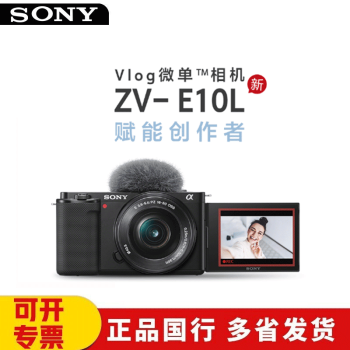
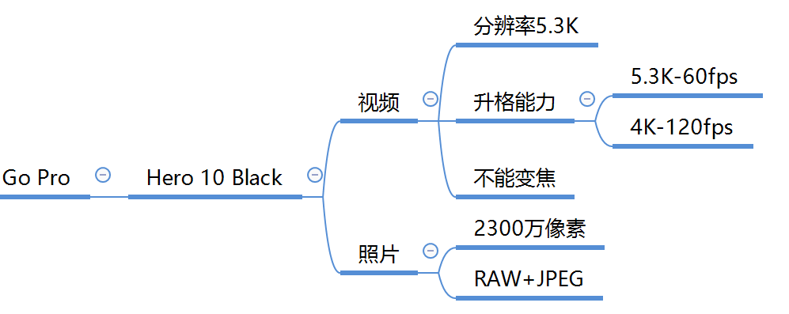
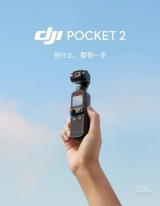
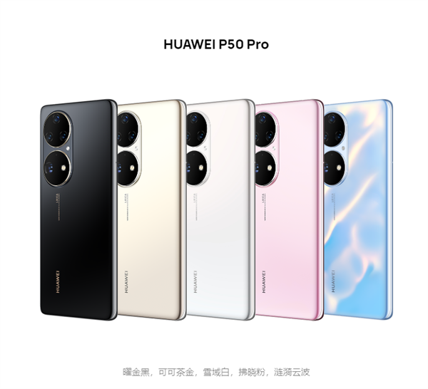

拍摄器材与参数指南 · 第 04 期 · 视频拍摄器材
家用级拍摄设备
Vlog相机 · 运动相机 · 手机
不是只有专业设备才能拍出好内容。从 Vlog 相机到运动相机再到旗舰手机，家用设备越来越强。
关键洞察
最好的相机是你随身携带的那一台
旗舰手机的算力加持、运动相机的防水防摔、Vlog 相机的一键成片——家用设备各有绝活。
视频拍摄器材
家用级拍摄设备
家用级设备四大金刚


Sony Vlog 相机 · GoPro 运动相机
Sony Vlog 相机 — ZV 系列专为视频创作者设计，自带美颜和产品展示模式，一键背景虚化。
GoPro 运动相机 — Hero 10 Black 等，防水防摔，超广角，适合户外极限运动和第一人称视角。


大疆 Pocket 口袋云台 · 各品牌中高端手机
大疆 OSMO Pocket 2 — 口袋云台相机，机械三轴防抖，小巧便携，适合边走边拍。
旗舰手机 — iPhone Pro / 华为 / 小米旗舰机型，计算摄影加持，日常最便捷的选择。
本节目标
学完本节，你将能够
话题 01
了解不同类型家用设备的特点
Vlog 相机的一键操作、运动相机的坚固耐用、口袋云台的极致便携、手机的计算摄影。
话题 02
掌握 Vlog 相机的核心功能
产品展示模式、美颜、一键背景虚化——这些是 Vlog 相机的独特优势。
话题 03
知道手机拍摄的潜力与局限
计算摄影让手机越来越强，但在弱光、长焦和动态范围方面仍有物理限制。
动手试试
用手机拍摄一段 1 分钟的日常 Vlog，注意光线和稳定性。
总结
工具不重要，重要的是你用它说什么
手机也能拍出好作品。当你知道自己想要什么画面，任何设备都能成为创作工具。